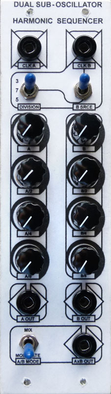
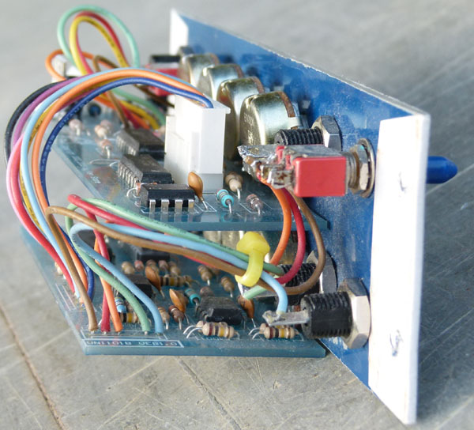
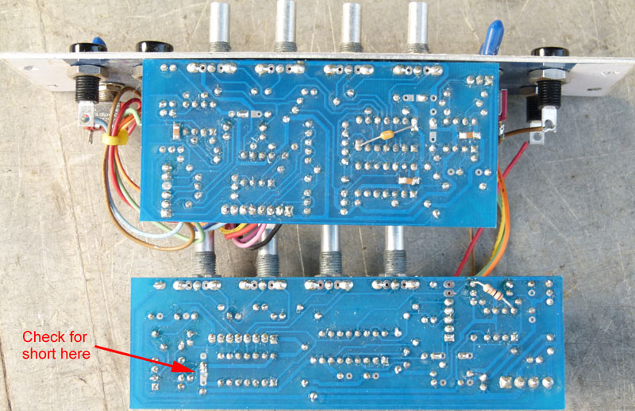
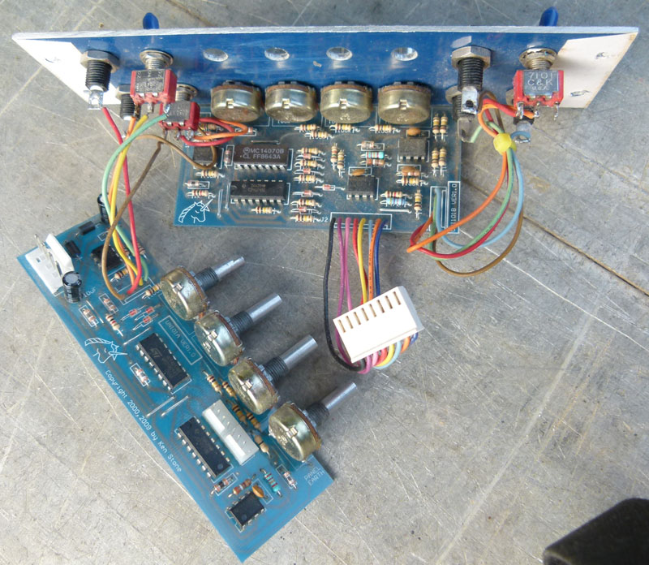

|
Sub Oscillator for music synthesizers.  The sub oscillator was one of the first synthesizer modules I ever built, back around 1980. The first version was designed with the ETI 4600 in mind, and was published as a circuit idea in the Australian edition of ETI. Another circuit I used at the time to "fatten up" the sound of my single oscillator synth was a "harmony generator", achieved by running a 4017 decade counter chip wired to divide by three or six. This design combines both of these circuits, giving a two channel sub oscillator, which allows each channel to be used independantly, or driven from the same oscillator, but set to different intervals. As a bonus, both channels can be multiplied or "digitally ring modulated" giving even more effects. Some ideas on how to use this module: Fed by two VCO's it can operate as two independant sub-oscillators, with optional ring modulated outputs. Running both sub-oscillators from the same VCO, tuned to a fifth over the base note you require, and with the prescaller set to divide by 3, it is possible to create harmonies. An unusual effect here is that the ring modulated outputs give a fatter chord-like sound that remains indepenant of minor or major scales, allowing "one finger chords" which can be handy when used with a related sequencer driven bass line. Careful mixing of the ring modulated output with one channel's divided output results in some interesting sounds, especially if one of the channels is being driven from a low frequency oscillator. Running like this, it could be considered to be a "harmonic sequencer" Running both inputs from the same LFO/clock signal, and feeding the mixed output into the 1V/oct input of a VCO gives you a pattern based sequencer, where the prescaler, ring modulated outputs, etc., all have a bearing on the pattern. Quite interesting patterns can be created this way. Each knob of course varies part of the overall structure, instead of a single note as per a regular step sequencer. Unlike the CGS01 sub-oscillator/harmonic sequencer, this design has been made for a specific panel design, and ease of wiring. Pots are mounted on the PCBs, and other panel components are wired in a predetermined order. It was originally developed as an experiment in production based design, not for the DIY market.
The design is intended for use with 4U Serge style panels with 8 rows at 3/4 inch spacing. Panel graphics were Serge inspired.
A little on how it works: The schematic of the UNI01 sub-oscillator. Click to enlarge.
The circuit can best be understood if viewed in smaller sections. The first part, the input processor, simply takes the input signal (preferrably symetrical, such as a square, triangle or sine wave), squares it up. There are two of these input stages on the PCB, one per channel. These processors provide the top octaves to the mixers, as well as providing the clock signals for the divider and prescaler sections. The second section is the prescaler, using a CD4017 CMOS decade counter, giving effective frequency divisions of 3, 5 and 7. The third section is the A channel divider. A CD4024 CMOS ripple counter is used, dividing the input by two, four and eight to give three sub-octaves octaves. The fourth section is the B channel divider. It functions just like the A channel divider, except that it is fed either from its own input processor OR from the selected output of the prescaler. The fifth section is another input processor, this time simply cleaning up the MODE control signal, be it a CV or a GATE signal, or its own switch, generating a logic level to control the next stage. The sixth section is a bypassable digital ring modulator. When the input to the MODE input is below approx 2 volts, the ring modulator is bypassed, resulting in the B channel being a standard sub-oscillator/divider. When the MODE input is above this voltage, the ring modulators are enabled. This is the "multiply" mode where the A channel is ring-modulated with the B channel. Note that in this mode the unmodulated B outputs are not available, replaced instead with the ring-modulated signal. The final section of the diagram is the mixer stage. There are three mixers, one for the A channel, one for the B channel, and one that combines the outputs of both.
The PCB layout of the UNI01 sub-oscillator. Click to enlarge. Note the required component changes as marked on the PCB. There may also be a short circuit between the pads of the 100n capacitor near the 4024. If so, remove the short circuit with craft knife or similar implement. On the rear of the boards there are several places where 100n decoupling capacitors need to be mounted. They are marked by square pads. On the CD4070, this capacitor needs to be of the leaded type, as it stretches between pins 7 and 14. Three other locations require 1206 or 805 SMT/SMD capacitors, while the remaining locations can use SMT/SMD parts OR a regular through-hold device as both mounting methods are provided. The wiring/assembly diagram of the UNI01 sub-oscillator. Click to enlarge. Note that on the bottom connector of the left PCB, the fourth pad is not used.
 Note the wiring at the bottom left of the board. The fouth pad is not used.
 The resistor on the rear of the lower PCB is part of the modification shown on the other side of the PCB on the component overlay diagram above.

Parts list This is a guide only. Parts needed will vary with individual constructor's needs. If anyone is interested in buying these boards, please check the PCBs for Sale page to see if I have any in stock. Can't find the parts? See the parts FAQ to see if I've already answered the question. Notes:
Article, art & design copyright 2009 by Ken Stone
| ||||||||||||||||||||||||||||||||||||||||||||||||||||||||||||||||||||